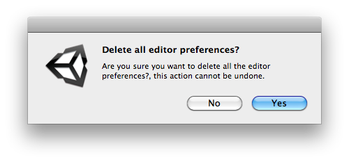

EditorPrefs.DeleteAll
public static void DeleteAll();
Description 描述
Removes all keys and values from the preferences. Use with caution.

Clears all editor prefs keys.
// Clear all the editor prefs keys. // // Warning: this will also remove editor preferences as the opened projects, etc.
using UnityEngine; using UnityEditor;
public class DeleteAllExample : ScriptableObject { [MenuItem("Examples/EditorPrefs/Clear all Editor Preferences")] static void deleteAllExample() { if (EditorUtility.DisplayDialog("Delete all editor preferences.", "Are you sure you want to delete all the editor preferences? " + "This action cannot be undone.", "Yes", "No")) { Debug.Log("yes"); EditorPrefs.DeleteAll(); } } }